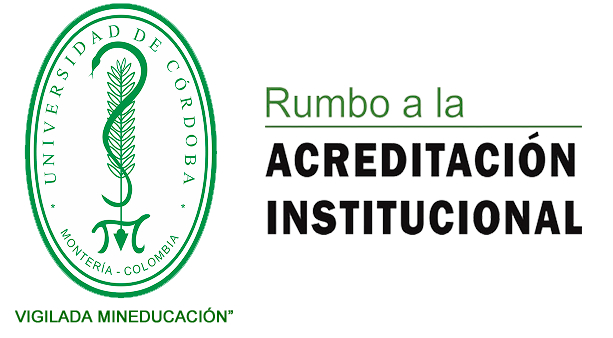

Universidad de Cordoba
"
La Universidad de Córdoba es una institución pública de educación superior que forma personas capaces de
interactuar en un mundo globalizado desde el campo de las ciencias básicas en relación con la producción
agroindustrial, las ingenierías, las ciencias sociales y humanas, la educación y la salud. Genera conocimiento en
ciencia, tecnología, arte y cultura, y contribuye al desarrollo humano y a la sostenibilidad ambiental de la región y
del país.